Home / Past papers / MLP End Term / this paper
IIT M DIPLOMA FN EXAM QDD1 13 Apr 2025 - 13 Apr 2025
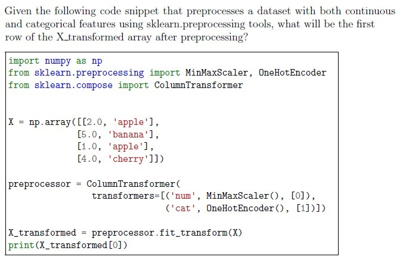
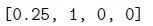
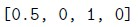
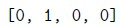
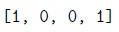
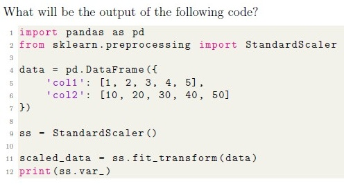
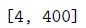
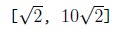
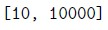
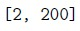
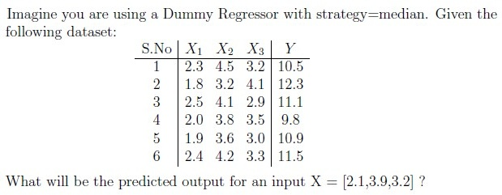
- 10.5
- 11.0
- 11.5
- 12.3
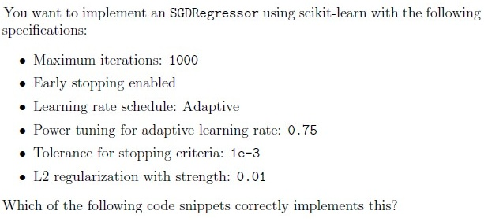
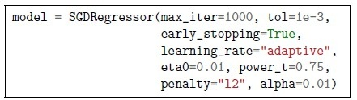
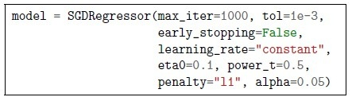
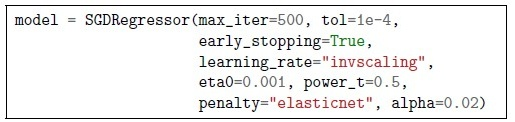
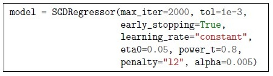
- Training the model.
- Choosing the best k value.
- Storing and searching through all training samples at prediction time.
- Calculating class probabilities.

- Increasing the number of hidden layers always improves regression accuracy.
- Using the ReLU activation function in hidden layers is a good choice for MLPregression.
- The output layer should use a softmax activation to predict continuous houseprices.
- MLPRegressor does not require feature scaling since neural networksautomatically normalize input data.
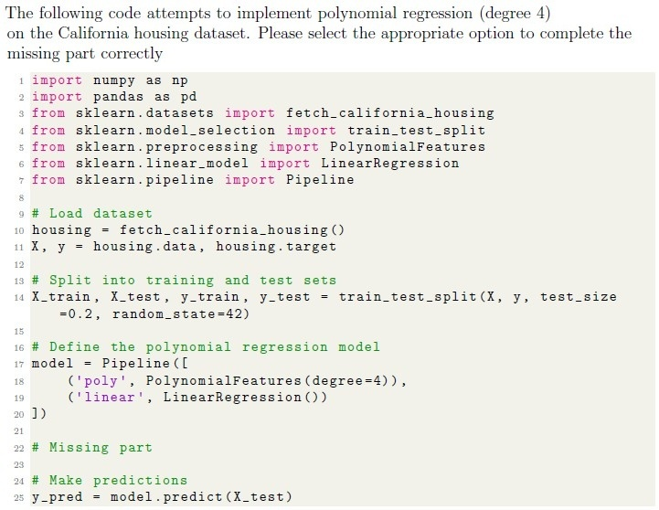
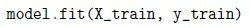
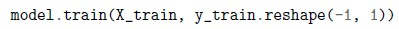
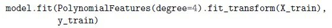
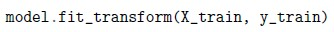
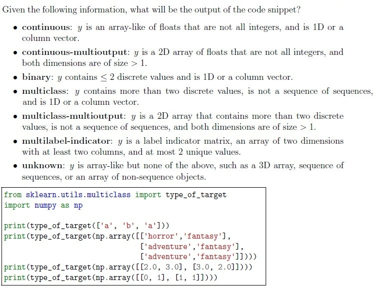
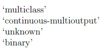
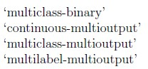
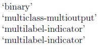
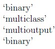
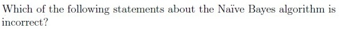
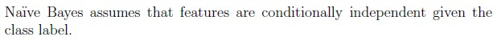
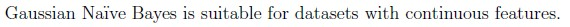
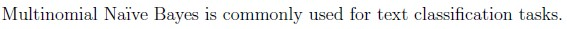
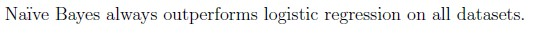
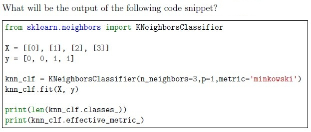
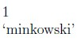
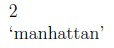
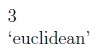
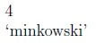
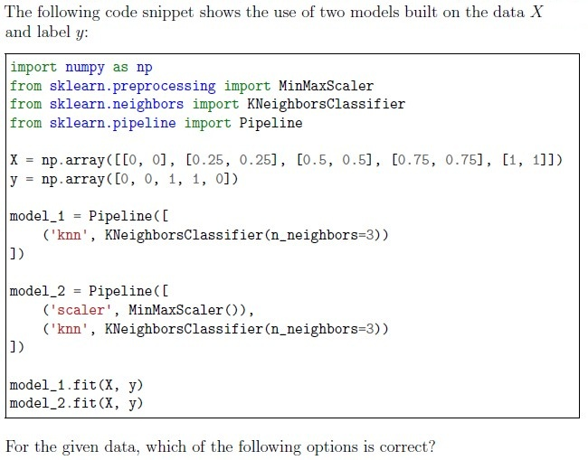
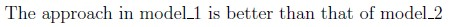
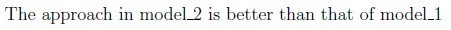
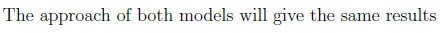
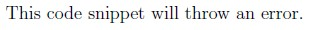
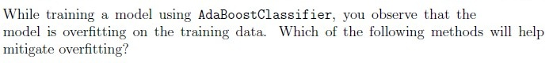
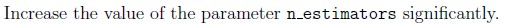
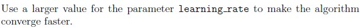
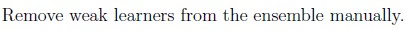
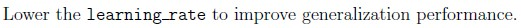

- It can only be used with classifiers that output probabilities.
- When voting=‘hard’, it chooses the class with the highest sum of predictedprobabilities.
- When voting=‘soft’, it averages the predicted probabilities and picks the classwith the highest probability.
- It cannot be used with Pipeline objects.

- Convert images to grayscale.
- Scaling the data using Min-Max Scaling
- Apply PCA to reduce feature dimensions.
- One-Hot encode the target labels (digits 0-9)
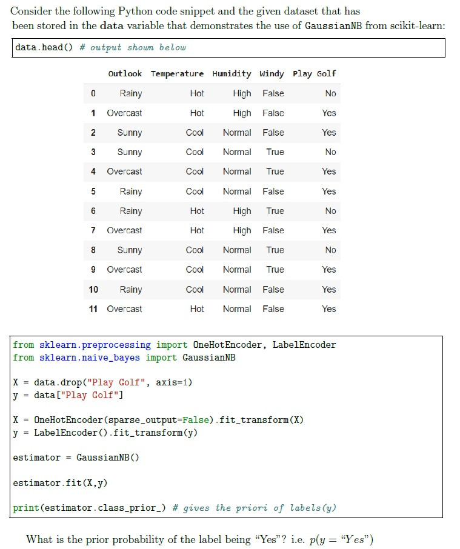
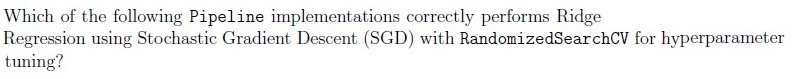
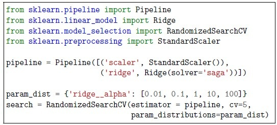
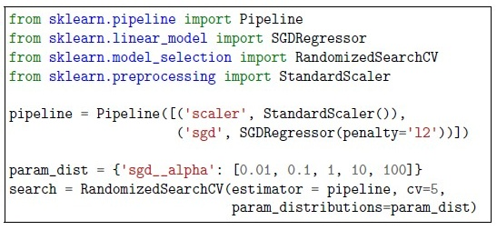
- GridSearchCV
- ElasticNetCV
- RandomizedSearchCV
- Mini batch gradient descent
- Euclidean Distance
- Manhattan Distance
- Jaccard Similarity
- Cosine Distance


 Use the confusion matrix given below. What is the recall score for the label (class) 1 ?
Use the confusion matrix given below. What is the recall score for the label (class) 1 ?

- Both the assertion and reason are correct, and the reason is a correctexplanation of the assertion
- Both the assertion and reason are correct, but the reason is not a correctexplanation of the assertion.
- The assertion is correct, but the reason is incorrect.
- The assertion is incorrect, but the reason is correct.
Answer key
- Q1 (MCQ, 1 marks): A
- Q2 (MCQ, 1 marks): D
- Q3 (MCQ, 1 marks): B
- Q4 (MCQ, 1 marks): A
- Q5 (MCQ, 1 marks): C
- Q6 (MCQ, 1 marks): B
- Q7 (MCQ, 2 marks): A
- Q8 (MCQ, 2 marks): C
- Q9 (MCQ, 2 marks): D
- Q10 (MCQ, 2 marks): B
- Q11 (MCQ, 2 marks): C
- Q12 (MCQ, 2 marks): D
- Q13 (MCQ, 2 marks): C
- Q14 (MCQ, 2 marks): B
- Q15 (SA, 3 marks): 0.659 to 0.680
- Q16 (MCQ, 3 marks): B
- Q17 (MSQ, 2 marks): A, C
- Q18 (MSQ, 2 marks): A, C
- Q19 (MSQ, 2 marks): A, B, C
- Q20 (MSQ, 2 marks): A, B, D
- Q21 (MSQ, 2 marks): A, C
- Q22 (MSQ, 3 marks): B, C
- Q23 (SA, 1 marks): 36
- Q24 (SA, 2 marks): 0.10
- Q25 (MSQ, 1 marks): A, C
- Q26 (SA, 1 marks): 120
- Q27 (SA, 1 marks): -1
- Q28 (MCQ, 1 marks): D
- Q29 (SA, 1 marks): 105
- Q30 (SA, 1 marks): 0.98
Concepts this paper tests
Auto-generated summary from the source site. Handy as a checklist; the lessons above explain each idea from scratch.
Here’s a structured summary of core topics, concepts, principles, and equations essential for the exam, followed by Mermaid knowledge graphs to visualize relationships.
Core Topics & Concepts
1. Data Preprocessing
Key Concepts:
Scaling/Normalization:
MinMaxScaler: Scales features to[0, 1]range.
StandardScaler: Standardizes features to mean=0, variance=1.
Encoding Categorical Data:
OneHotEncoder: Converts categorical features into binary columns.LabelEncoder: Converts categorical labels into numerical values (e.g.,["Yes", "No"] → [1, 0]).
Polynomial Features:
PolynomialFeatures(degree=n): Generates polynomial/combination features (e.g., ).
Pipeline & ColumnTransformer:
Pipeline: Sequentially applies transformations/estimators.ColumnTransformer: Applies different transformations to different columns.
Key Equations:
| Technique | Equation |
|---|---|
| Min-Max Scaling | |
| Standard Scaling | |
| Polynomial Features | (for original features, degree ) |
2. Model Training & Evaluation
Key Concepts:
Dummy Regressor/Classifier:
strategy="median": Always predicts the median ofy_train.strategy="most_frequent": Always predicts the most frequent class.
K-Nearest Neighbors (KNN):
- Bottleneck: Prediction time (searches entire training set).
- Distance Metrics: Euclidean, Manhattan, Minkowski.
- Hyperparameters:
n_neighbors,p(for Minkowski),weights(uniform/distance).
Naïve Bayes:
- Assumes feature independence given the class.
- Variants: Gaussian (continuous data), Multinomial (text), Bernoulli (binary features).
Support Vector Machines (SVM):
- Kernels: Linear, RBF, Polynomial, Sigmoid.
- Hyperparameters:
C(regularization),gamma(RBF kernel width).
Decision Trees & Random Forest:
max_depth,min_samples_split,bootstrap,oob_score.- Random Forest: Ensemble of decision trees with bagging.
Stochastic Gradient Descent (SGD):
learning_rate="adaptive",penalty="l2"(Ridge),early_stopping.- Loss functions:
log_loss(classification),squared_error(regression).
Neural Networks (MLP):
- Activation functions: ReLU, Sigmoid, Tanh.
- Solvers:
adam,sgd,lbfgs. - Critical Preprocessing: Feature scaling (e.g.,
StandardScaler).
Model Evaluation:
Confusion Matrix:
- Recall (Sensitivity):
- Precision:
- F1-Score:
- Classification Report: Precision, recall, F1-score per class.
Overfitting Mitigation:
- Regularization (L1/L2), early stopping, reducing model complexity.
Key Equations:
| Metric | Equation |
|---|---|
| Recall | |
| Precision | |
| F1-Score | |
| SGD Update Rule |
3. Hyperparameter Tuning
Key Concepts:
- GridSearchCV: Exhaustive search over specified parameter values.
- RandomizedSearchCV: Randomly samples parameter combinations.
- Cross-Validation: Splits data into
kfolds to evaluate generalization. Common Hyperparameters:
C(SVM/Logistic Regression),alpha(Ridge/Lasso),n_estimators(Random Forest).
4. Clustering
Key Concepts:
Hierarchical Clustering:
- Agglomerative (Bottom-Up): Starts with individual points, merges closest clusters.
- Divisive (Top-Down): Starts with one cluster, recursively splits.
- Distance Metrics: Euclidean, Manhattan, Cosine, Jaccard.
K-Means:
- Requires predefined
k(number of clusters). - Sensitive to initialization (use
k-means++).
- Requires predefined
5. Dimensionality Reduction
Key Concepts:
Principal Component Analysis (PCA):
- Transforms features into orthogonal components (ordered by variance).
n_components: Number of principal components to retain.
Feature Union:
- Combines multiple feature transformations (e.g.,
PolynomialFeatures+PCA).
- Combines multiple feature transformations (e.g.,
Key Equations:
| Technique | Equation |
|---|---|
| PCA Variance | |
| Feature Union | Concatenates outputs of multiple transformers. |
6. Pandas & Data Handling
Key Concepts:
DataFrame Slicing:
loc: Label-based indexing (inclusive of both start/end).iloc: Position-based indexing (exclusive of end).
Handling Missing Data:
dropna(),fillna(), or ignore inOneHotEncoder(handle_unknown="ignore").
Aggregation:
groupby(),apply(),sum(),mean().
Example Code Snippets:
### loc vs iloc
df.loc[23:25, 'Marks':'History'] # Labels 23-25, columns 'Marks' to 'History'
df.iloc[2:4, 1:3] # Rows 2-3 (0-based), columns 1-27. Imbalanced Data & Metrics
Key Concepts:
- Accuracy Paradox: High accuracy can be misleading if classes are imbalanced.
Better Metrics:
- Precision-Recall Curve, ROC-AUC, F1-Score.
class_weightin models (e.g.,RandomForestClassifier).
Resampling:
- Oversampling (SMOTE), undersampling.
Graph 2: Model Evaluation Metrics
Graph 3: Hyperparameter Tuning
Graph 4: Neural Networks (MLP)
Graph 5: Clustering Algorithms
Graph 6: SVM Kernels
Graph 7: Handling Imbalanced Data
Key Equations Summary
| Topic | Equation |
|---|---|
| Min-Max Scaling | |
| Standard Scaling | |
| Polynomial Features | (for features, degree ) |
| Recall | |
| Precision | |
| F1-Score | |
| SGD Update | |
| Ridge Regression (L2) | |
| PCA Variance |